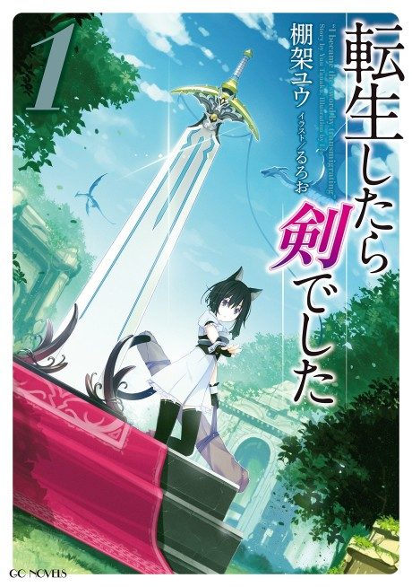

Anime
Anime
Light novel2022 · Action, Adventure, Fantasy
Reincarnated as a Sword
転生したら剣でした
AniList7.4
Animeter—
2 seasons15 ep
SourceUnclear
Anime finished. Where does the story go next?
StatusNo source yet
We looked for where the anime ends in the light novel but found no source we trust yet. The light novel is still running.